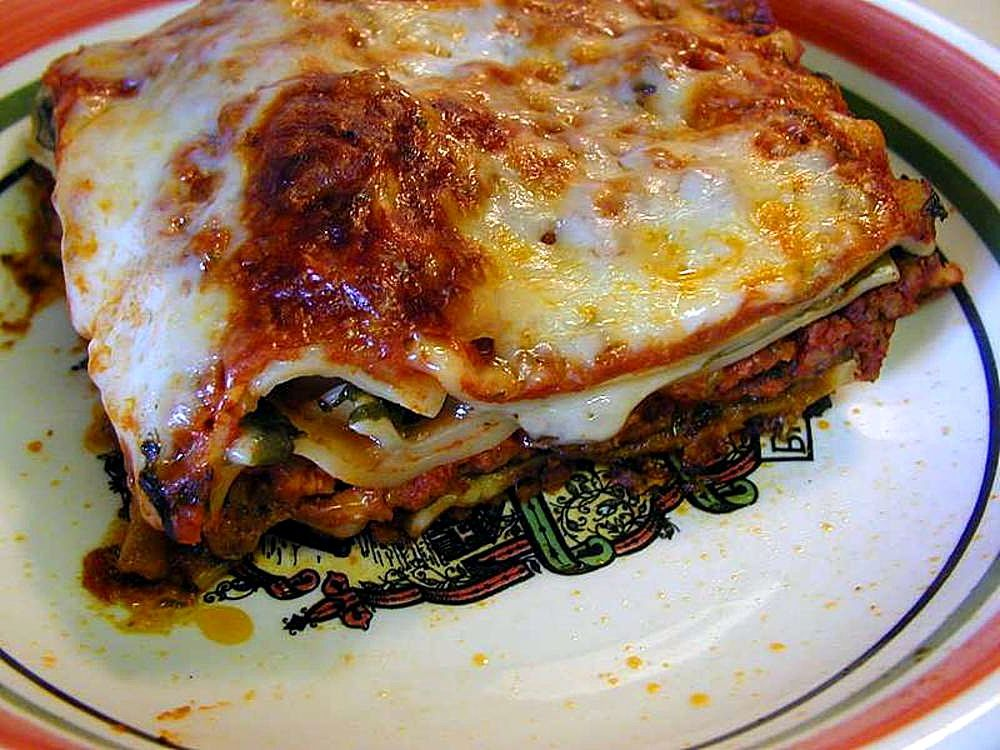

Lasagna

Description
This recipie is easy to follow and will help you make a excellent lasagna
Ingridients
- Lasangeplattor
- Blandfärs 800 gram
- Krossade tomater 400 gram
- Oregano 3 msk
- Timjan 3 msk
- Mjölk 5 dl
- Mjöl 3 msk
- Smör 50 gram
- Stek färsen
- Blanda i krossade tomater
- Blanda i kryddorna
- Smält smöret i en kastrull
- Lägg i mjölet och vispa runt
- Häll i mjölk och koka till önskad konsistens
- Varva lasangeplattor och färs tillsammans med såsen